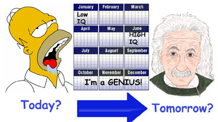

How To Become A Genius This Year
Discover how to achieve genius IQ status within the next 4-to-12 months

Just imagine how cool it would be if you knew how to become a genius this year. What if, in 12
months time, you were recognized as a real genius? Suppose that, in as little as 4-to-6 months from
now, you could demonstrate that your IQ score had risen to the level of genius. Sound good? You like that
picture? How great would it feel to know that YOU are smarter than 99.99% of the people around you?
Get Smarter than Bill Gates
What could you achieve in life if you could think like a genius? You know, they talk about people like billionaire
Bill Gates being a genius... but you could become even smarter than him! How much more money could you make if your
genius IQ helped you generate brilliant new ideas? What world changing products could you come up with when you
figure out how to become a genius.
Achieve a Genius IQ Score
I guess you're dying to find out how to become a genius. Yes, it is truly possible to boost your IQ and achieve a
genius IQ score of 180+ according to a new program called, The Complete Guide to Genius.
Curious but cautious
As part of my on-going research into mind and brain development techniques, I stumbled upon this new guide only
recently. I read the sales page and was impressed enough to buy the ebook. I was sceptical when I opened it and
immediately noticed it ran to only 38 pages. Surely that couldn't be enough to show YOU how to become a
genius? That's what I thought until I started reading it...
Passion for Knowledge
I'm passionate about this field. I love finding personal development tools that help you bootstrap yourself to
new levels of achievement. And more than anything my focus on mind, brain, genius and creativity has exposed
me to some of the cutting edge science in these fields. I had a lot to compare The Complete Guide to Genius against: Tony Buzan, Edward de Bono, the
Superlearning and Supermemory books, Michalko, Gelb, Bandler, the great Win Wenger, to name but a few. How
did it compare? Surprisingly well! I was impressed. Very impressed.
Natural Genius versus Earned Genius
If you've looked around my site, you will have discovered lots of tips on how to think more creatively and access
what I call your natural genius. It's true that you were born a genius. You only have to look at what a baby
learns to recognize that the healthy human brain can is naturally imbued with genius. The thing is that we lose a
lot of our genius abilities as we grow up. They get covered up and lie dormant.
Missed opportunities
I think that we all continue to access our genius everyday but often fail to notice that. We haven't learnt
the skills that enable us to harness the peaks of our thinking. We live instead within the troughs of our
thinking... habitual lazy thinking styles that fail to harvest the real gold mine within.
Lots of people disagree with the theory that we are naturally geniuses. They see genius as the result of genes
and environment. Something that can't be replicated. And others say that we can build our brain power through work
and effort.
Work in Progress
My current conclusion is that, yes, genetics can bless us. We can grow up with a better use of our brains than
others. Does that mean that one genetically-gifted person will remain smarter than a less-genetically-gifted
person? No. Not at all. We see apparently smart people make terrible life choices that rob them of their gifts all
the time on the news. We also occasionally hear about people who have fought their way up and out of impoverished
situations (be that they financial or mental) to achieve great heights of success and brilliance.
Starting IQs
We all have different starting situations. Measured by IQ, we all have different IQs... but if a person with a
lower IQ starts practicing skills like mind-mapping, image streaming, brainstorming and using creative thinking
exercises...he can excel and triumph over people with higher IQs who do nothing like that.
The Complete Guide to Genius actually offers a systematic program to
build your IQ and achieve a genius IQ score. It reveals how to become a genius not someday when, not in some
fantasy scenario, but in real time. It sets out the information you need. It tells you what to do. It tells you
how often and for how long you need to practice. That's what I love and that is what is so unique about it.
There is no ambiguity. There is no shilly-shallying. It tells you straight what to do and what you will achieve
by doing it.
This Is Not For Everybody
Take my warning. This guide is tantamount to a top secret training program. Don't take this guide lightly. If you
want to know how to become a genius this year, in as little as 4 months, perhaps 9 months if your starting IQ is
low, it provides the precise program of training you need. It isn't an instant mix, 'just add water' solution.
You WILL need to work at it. You will need to practice for as much as 90 minutes a day, 6 days a week. Can you
commit to that? If not, stay away. If however you feel compelled to discover just what it would be like to actually
BE A FREAKIN' GENIUS, you should check it out.
Why Am I SO EXCITED By This?
I tell you I'm not easily impressed. What immediately struck me as I was reading this guide on how to become a
genius was the authority with which it was written. Many authors hedge their bets when writing. You can tell that
they are surmising or guessing or spouting theory. Empty words. This guide is completely different in that it is
written with authority and conviction. The author has created a program. He has organised brain building skills
into a schedule of practice that serves to stimulate superior neural activity and build IQ. And he has tested the
program and achieved amazing results. I'm convinced.
Going for Genius IQ
Why don't you join me in learning how to become a genius? I wasn't interested in IQ scores before I came across
The Complete Guide to Genius but it presents such a clear promise that
I just have to find out if it's true. My interest has always been in thinking like a genius and generating
genius ideas. But now I really want to see if I can develop my whole brain and consistently perform as a genius.
I want to achieve a genius level IQ score and discover for myself what affect that has on my level of thinking,
success and achievement.
How to Become a Genius
If you want to get on the how to become a genius this year program with me, please visit the website for
'The Complete Guide to Genius' which is at http://www.genius-intelligence.com

(You can also learn lots about genius, creative thinking and boosting intelligence by reading the articles on my
site here.)
Become a genius
|